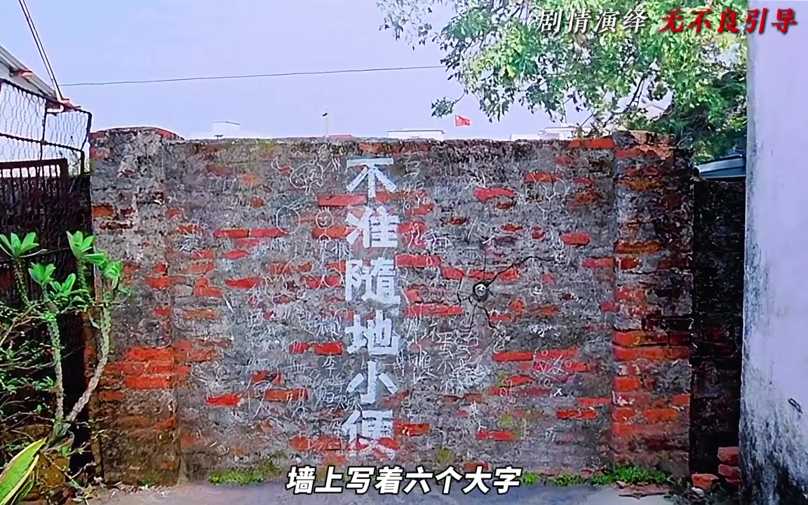
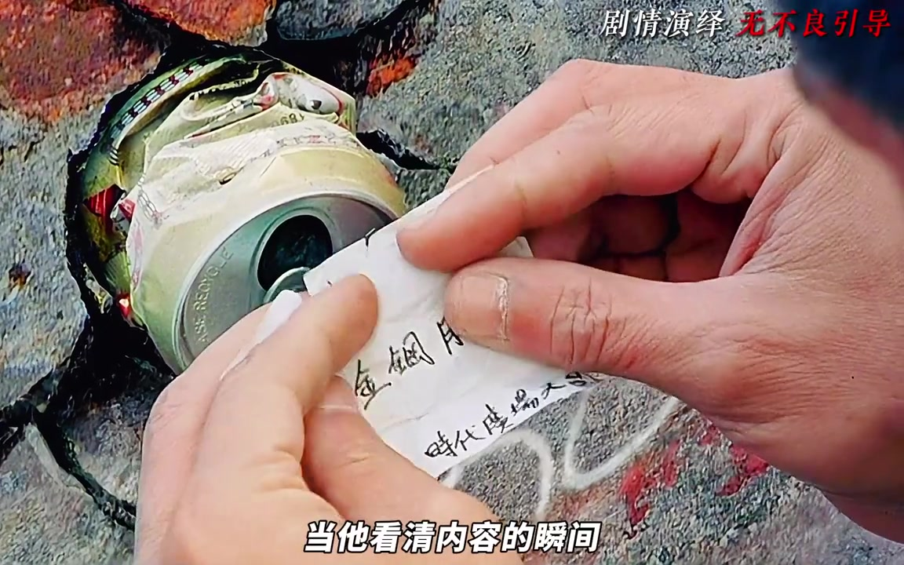
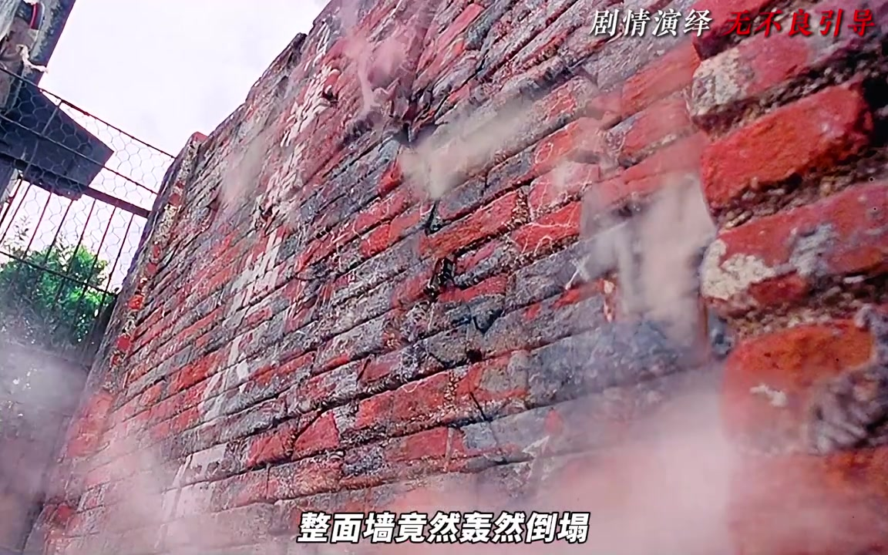
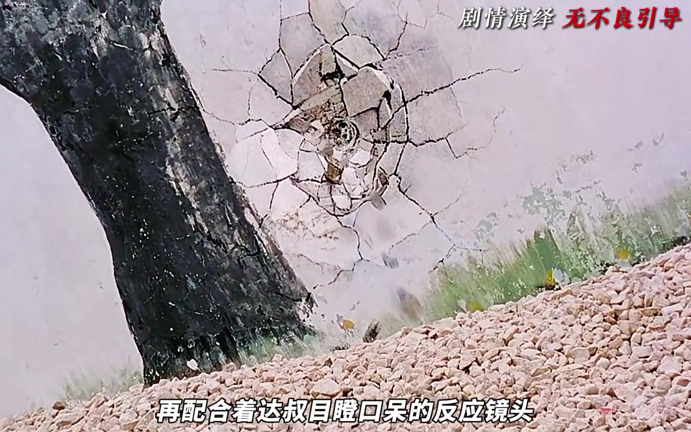
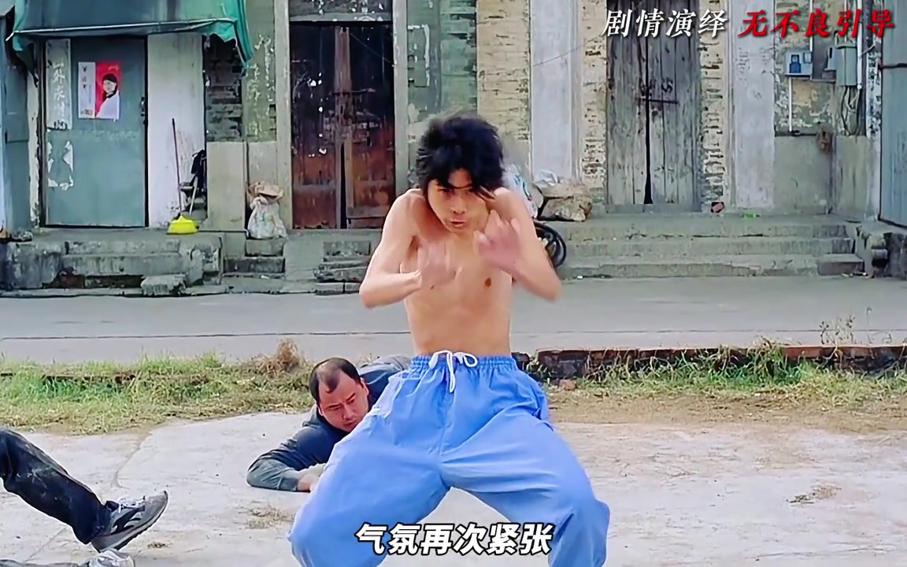
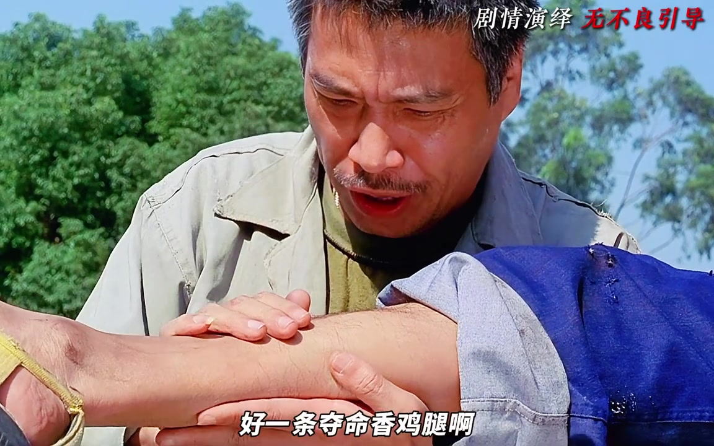
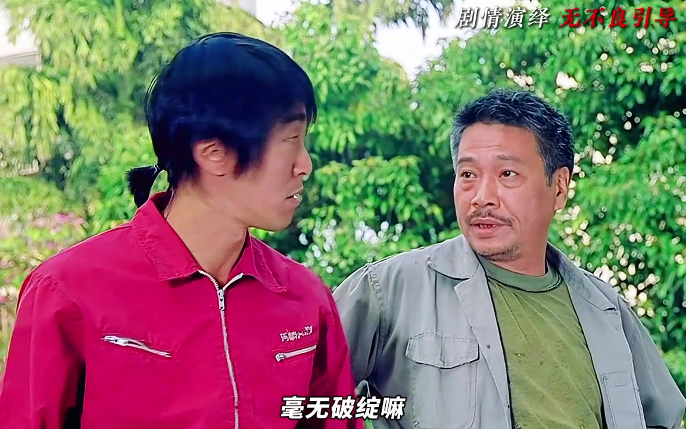

先看墙上的字，再发现墙里的易拉罐
五月说剧开场追问：周星驰的喜剧为什么总能在粗俗边缘戳中笑点？镜头先跟着达叔的视线落到墙面，“不准随地小便”像是答案，叙述却马上把它翻成障眼法——真正推动情节的是嵌在墙体里的易拉罐。

缓慢推镜把罐子从环境细节抬成悬念中心。达叔抽出纸条，影片插入闪回；没有旁白解释，观众与角色同时拼出“罐子从几条街外被踢来”的荒唐因果。

拔罐子不换场，整面墙直接倒下
达叔试图拔罐，墙体随之轰然倒塌。视频把这称为“打破空间壁垒”：导演没有用普通转场去往下一处，而是让物理破坏直接连接墙前与墙后的空间。景深打开后，阿星和一群混混进入同一画面。

接下来出现一组周边反应：小卖部老板害怕、路人跑开、老师把看热闹的孩子抱回校园。按叙述者的判断，这些环境细节以旁观者恐惧侧写阿星的战斗力。
观众等着肉搏，镜头却先把人甩出十几米
三名混混冲向阿星，传统近身肉搏刚被观众预想出来，威亚与广角就把人物飞行距离故意拉长。视频称之为“反牛顿力学”的漫画快感：失真不是被掩盖，而是被夸张到成为风格。
动作过后，阿星说自己不是来打架，而是来踢球；先装出硬汉无恙，再用生理性的呕吐打破错觉。视频把这段“延迟反应”归纳为节奏错位：笑点不只在动作本身，还在身体反馈晚了半拍。
腿劲转到足球上，球变成会找人的暗器
阿星把力量用到足球上，混混的惨叫、墙上的大坑和达叔目瞪口呆的反应被剪成一组视听蒙太奇。画面不需要测量力量，受击结果与旁观反应已经替它完成说明。

有人企图爬墙逃跑，阿星踢中旁边竹竿，竹竿在无形力量牵引下追向目标。叙述者把它对应到传统武侠“飞花摘叶皆可伤人”的现代化演绎；这是创作者的类型解读，而不是视频外部事实。
螳螂拳架势拉满，三毛钱让高潮泄气
场上只剩瘦猴。低角度全景、螳螂拳架势与紧张气氛，看起来都在承诺一场高手对决；导演却切掉背景音乐，让对话落到“身上有钱吗”“这算不算抢劫”和三毛钱。

视频把这种组合称为反高潮：最严肃的架势配最微小的钱数，传统武侠的崇高感被喜剧性地解构。它没有证明所有笑声都能计算，却明确展示了这一个段落如何安排预期与落差。
战斗放缓，一条腿被达叔看成“一座金山”
阿星坐在花坛边喝豆奶，达叔突然凑近，要求拉高裤腿并用手检查。视频认为这种带有强烈生理触感的动作，直接呈现达叔近乎痴迷的兴奋：他看见的不只是腿，而是重新进入足球世界的机会。

“大力金刚腿”“武术可以踢球吗”“有搞头”用很快的语速连续抛出。随后达叔亮出“黄金右脚”的往事，阿星催促立刻行动；视频把这组对话看成两个落魄人物在焦虑中迅速结盟。
节奏加快：从大师兄的酒吧，切到二师兄
决定组队后，叙事立刻进入招募蒙太奇。阿星先找大师兄：曾经身怀绝技的少林弟子，如今在酒吧做清洁。冷色灯光、压抑构图与拒绝加入的回答，把现实落差摆在镜头里。
视频借用“英雄拒绝召唤”概念解释这一停顿：先让现实足够困顿，后续逆袭才有落差。劝说无果后，镜头干脆切到二师兄，达叔顺势接话，让招募段落保持连贯。

结尾在“草台班子正一步步走向巅峰”的判断后收束，五月说剧报出账号并告别；最后保留了一小段角色对话作为尾声。
说明：页面按视频原有顺序记录。文中“反高潮”“英雄拒绝召唤”等均是创作者在视频中的分析框架；截图带有原视频“剧情演绎”提示，危险动作不应模仿。